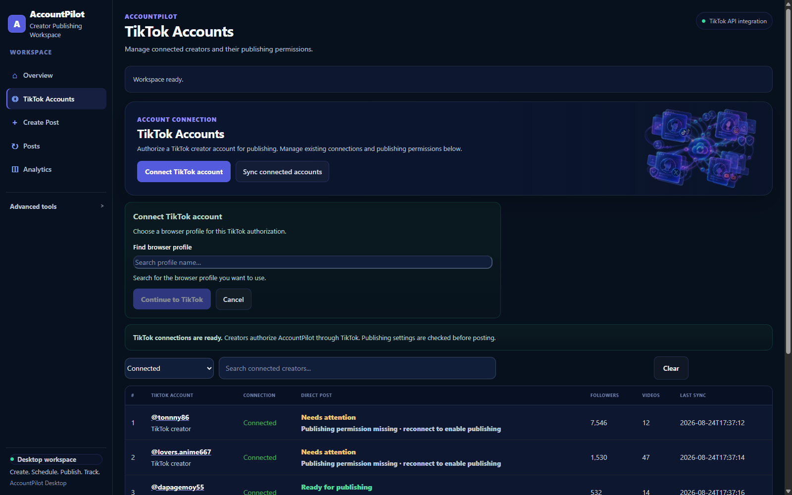

Public product website. Local desktop application.
This website is the official public product website for AccountPilot. The working AccountPilot application runs locally on the review computer and is opened at http://127.0.0.1:8000/.
Reviewer path
The expected review flow is: open this public website, launch AccountPilot Desktop, open TikTok Accounts, choose Connect TikTok account, search for the intended local browser profile, select it explicitly, then choose Continue to TikTok. The public website does not replace the desktop application and does not handle the local OAuth callback.
Creator authorization
Authorized users connect TikTok accounts they own or are expressly authorized to manage. The reviewer-facing chooser does not preload the full local browser-profile registry, and connected-account totals are not exposed on the public reviewer surface.
Managed onboarding
AccountPilot is currently distributed through managed onboarding rather than as an unrestricted public download. Creators and content teams can contact GudLabs for access and setup support.
Search first, then continue to TikTok.
The desktop chooser starts empty, requires an explicit matching profile selection, and keeps the full local profile inventory in Advanced Tools rather than on the reviewer-facing Accounts page.
